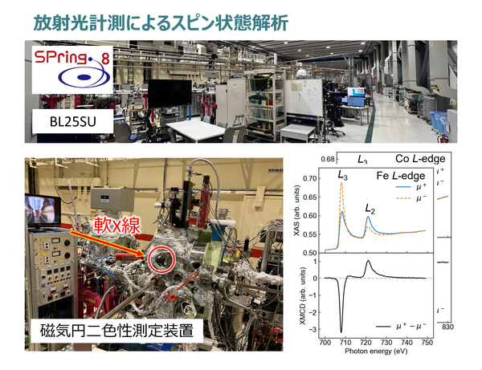
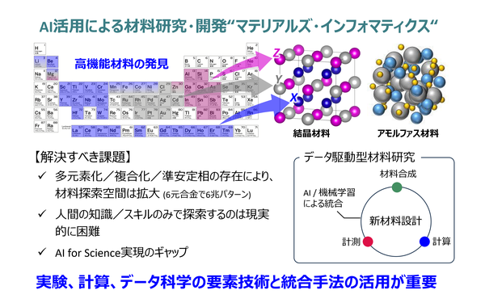
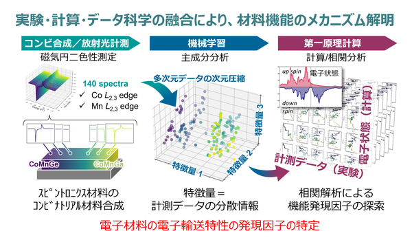

Overview
研究概要
材料物性の複雑さを物理と情報科学で読み解き、新しい機能材料を切り拓く
カーボンニュートラルの実現や高度情報社会の進展に伴い、電動機器やパワーエレクトロニクスの高効率化、メモリ・スイッチング・センシングデバイスの高性能化を支える材料の重要性がますます高まっています。とくに、低損失磁性材料、相変化材料、機能性金属材料などでは、エネルギー変換や情報処理を担う中核材料として、より高効率で高機能な応答が求められています。しかし、こうした材料の機能は、組成や結晶構造だけで決まるのではなく、組織、欠陥、界面、局所構造、ゆらぎといった複雑な内部状態に強く支配されるため、その起源を明確に理解することは容易ではありません。
当研究室では、金属材料を中心に、アモルファス材料や相変化材料などを対象として、材料工学が扱う複雑な現象を物理の視点から読み解く研究を進めています。実験計測によって材料のふるまいや応答を捉え、計算科学によってその背後にある原子・電子レベルの機構を明らかにし、さらにデータ科学やAIを活用してそれらを横断的に結びつけることで、複雑な材料機能の本質に迫ります。静的な構造や平均的な物性だけでなく、相変化、原子拡散、緩和機構などの時間発展を伴う現象にも注目し、その理解を予測・設計へとつなぐ動的情報材料学の開拓を目指しています。
Projects
プロジェクト
#001 材料物性 × 実験計測 原子・電子構造から時間応答までを捉え、材料機能を読み解く

材料の磁性や機能は、原子配列、電子状態、局所構造、磁区構造など、複数の階層にまたがる内部状態によって決まります。本研究では、X線分光、放射光計測、磁気測定などの実験手法を用いて、材料内部の状態を多面的に観測し、機能発現の起源を明らかにします。
実験計測の強みは、元素選択的な電子状態解析から、試料全体の磁化応答や輸送応答まで、スケールを横断しながら理解を深められる点にあります。組成や構造の違いがどのように特性へ反映されるのかを、実験データに基づいて丁寧に整理し、材料機能の本質に迫ります。
さらに、外部磁場や高周波励起に対する応答を時間分解計測によって追跡し、磁化反転、磁区壁運動、緩和過程といった磁気ダイナミクスにも注目しています。時系列信号やスペクトル情報を統合的に解析することで、損失やエネルギー散逸と結びついた動的挙動の理解へとつなげています。
これまでに、磁性材料や薄膜材料を対象として、元素選択的な分光測定、磁化測定、高時間分解磁気計測による磁区ダイナミクス解析を進めてきました。実験で得られた多様なデータを理論解析や計算科学と組み合わせることで、材料挙動をより深く理解する研究を展開しています。
卒論・修論テーマ例
- 高時間分解磁気計測による磁化緩和・磁区ダイナミクスの解析
- 機能性薄膜・バルク材料における構造・物性・応答の相関評価
- 放射光X線計測による原子拡散と相変化挙動の解明
#002 材料設計 × 計算科学 電子・原子スケールで材料のふるまいを再現する

材料の性質は、原子配列や電子構造、格子振動の相互作用によって形づくられます。本研究では、第一原理計算や分子動力学シミュレーションを用いて、材料内部で起きている現象をコンピュータ上で再現し、実験では直接見えにくい原子・電子スケールの挙動を理論的に理解します。
第一原理計算により電子状態やエネルギー構造、磁気異方性、格子歪みに対する応答などを解析し、分子動力学によって温度や外場のもとでの原子運動や構造変化を追跡します。これにより、静的な結晶構造だけでなく、非平衡状態や時間発展を含む動的な材料挙動まで扱うことが可能になります。
数値計算は、実験結果の解釈や材料設計指針の構築に活用されます。材料を作製する前段階で性質を予測し、どの要因が特性を支配しているのかを明確にすることを重視しています。材料をつくる前に性質を予測し、候補材料や有望な構造条件を見いだす研究へと展開しています。
これまでに、磁性材料や電子材料を対象として、電子状態解析、格子歪み応答、温度効果を含むマルチフィジックスな数値計算を進めてきました。実験結果と計算結果を対応づけることで、材料挙動をマルチスケールで説明する研究を行っています。
卒論・修論テーマ例
- 第一原理計算による電子状態解析と材料特性の相関評価
- 分子動力学による温度・外場下の構造安定性と相転移挙動の解析
- 計算科学に基づく材料設計指針の探索と候補材料の提案
#003 物理モデル × データサイエンス・AI 理解と予測を両立する新しい材料設計指針をつくる

データサイエンスやAIは、材料研究において高い予測能力を示しますが、その結果がなぜ得られたのか、どの因子が本質的なのかが見えにくいという課題もあります。本研究では、物理モデルとデータサイエンスを組み合わせることで、解釈可能で信頼性の高い材料解析手法の構築を目指しています。
実験や計算から得られる多様なデータに対して、物理的意味を持つ指標や制約条件を与えることで、AIが本質的な特徴を学習するよう設計しています。これにより、単なる数値予測にとどまらず、特性を支配する要因の抽出や整理が可能になります。
また、物理法則に基づいたデータ解析を行うことで、材料特性の変化を体系的に理解し、新たな視点から材料研究を進めています。物理と情報を橋渡しする研究分野として位置づけています。
これまでに、実験データや計算結果を用いた相関解析、次元削減、特徴量抽出、物性指標に基づくモデル化を進めてきました。さらに、機械学習ポテンシャルを活用したアモルファス合金の相安定解析など、物理モデルとAIを融合した新しい材料研究へ展開しています。
卒論・修論テーマ例
- 物理指標に基づく材料データの相関解析と支配因子の抽出
- 実験・計算データを統合した材料特性予測モデルの構築
- 物理モデルと機械学習を組み合わせた解釈可能な材料解析手法の開発
- 機械学習ポテンシャルを用いたアモルファス合金のナノ力学解析